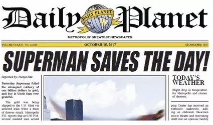

Smallville tuvo un recorrido interesante en cuanto a premios y nominaciones, destacándose más por su reconocimiento dentro del género y por el apoyo del público que por una gran cantidad de galardones tradicionales. A lo largo de sus diez temporadas, la serie logró consolidarse como una producción importante dentro de la televisión de ciencia ficción y superhéroes.
En el ámbito de los Primetime Emmy Awards, Smallville recibió varias nominaciones, especialmente en categorías técnicas como efectos visuales y edición de sonido. Esto refleja el nivel de producción que manejaba la serie, sobre todo teniendo en cuenta que fue emitida en una cadena como The WB (y luego The CW), que no siempre competía directamente con las grandes producciones de cadenas más prestigiosas. Aunque no obtuvo premios principales, estas nominaciones posicionaron a la serie dentro de un estándar alto en lo técnico.
Donde sí tuvo una presencia más fuerte fue en los Saturn Awards, organizados por la Academy of Science Fiction Fantasy and Horror Films. Estos premios, enfocados en el cine y la televisión de ciencia ficción, fantasía y terror, reconocieron en múltiples ocasiones a la serie. En particular, el trabajo de Michael Rosenbaum como Lex Luthor fue muy valorado, convirtiéndose en uno de los aspectos más elogiados por la crítica y los fans.
Por otro lado, la serie tuvo una relación muy fuerte con el público joven, lo que se vio reflejado en su desempeño en los Teen Choice Awards. Allí obtuvo varias nominaciones y premios en categorías como mejor serie de acción o aventura y mejor actor, destacando especialmente Tom Welling por su papel como Clark Kent. Este tipo de reconocimientos evidencia el impacto cultural de la serie en su generación.
Además, Smallville también fue premiada en los Leo Awards, donde se reconoció su producción, efectos visuales y aspectos técnicos, teniendo en cuenta que gran parte de la serie fue filmada en Canadá. A esto se suman algunas nominaciones en los People's Choice Awards, que refuerzan la idea de que su mayor fortaleza estuvo en la conexión con la audiencia.
En conjunto, aunque no fue una serie dominante en los premios más tradicionales, Smallville logró un reconocimiento sólido en su nicho, tanto por su calidad técnica como por su impacto en el público, consolidándose con el tiempo como una de las producciones más importantes dentro del género de superhéroes en televisión.